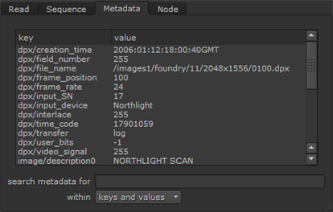
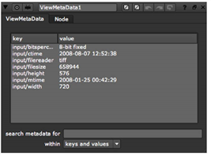

查看文件元数据的最简单方法是单击 元数据 选项卡中的 属性 标准读取节点的面板。将显示所有可用的元数据以及简单的搜索功能。

要筛选元数据列表，请使用 搜索元数据 字段。例如，如果您输入 f 在 搜索元数据 字段中，仅显示包含字母 f 的键和值。默认情况下，搜索在键和值中完成。如果要将搜索限制为仅键或值，请设置 内 到 仅密钥 或 仅值 。例如，您可以查看数据具体的输入文件格式 (例如, Dpx/ ) 在 搜索元数据 字段和设置 内 到 仅密钥 .
注意: 当观察图像的创建时间 (输入/ctime) 时，Windows 通常不同于 Linux 和 Mac OS X。这是由于操作系统处理文件创建时间的方式不同。
一旦知道输入上存在哪些键，就可以在表达式中引用它们。请参阅 使用 Tcl 表达式访问元数据 .
还可以使用 ViewMetaData 节点查看元数据:
| 1。 | 选择 元数据 > ViewMetaData 在要检查其元数据的节点后插入 ViewMetaData 节点。 |
| 2. | 在 ViewMetaData 属性中，可以看到图像中嵌入的元数据列表。这分为键及其值。 |

|
|